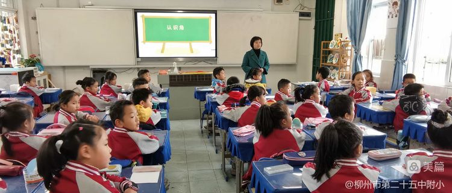

学校的风采
2022 年 4 月 17日
柳州二十五中附小简介：
柳州二十五中附小始终在努力构建适合每位学生学习成长、每位教师专业发展的和谐教育生态，坚持深化教育改革，优化素质教学，为学校开辟和寻找多种建设性的渠道。
柳州二十五中附小教师队伍深受党的教育和培养，并且受党和人民的委托和信赖，有较强的事业心和责任感，治学严谨，完善健全人格教育。
学校经过不断的发展，学校环境建设不断改善，教育教学设施也得到不断的补充和完善。
学校全面贯彻党的教育方针，坚持抓两支队伍建设，积极参加课程改革、校本教研等系列活动。近年，学校教学质量突出，办学区域影响力不断增强，学校自身发展态势向好。
展现学科智慧，献礼建党百年——记柳州市第二十五中附属小学学科竞赛之“英语单词”大比拼挑战赛
2022 年 4 月 17日
胜日寻芳泗水滨，无边光景一时新。在花开香满园的四月，校园的一草一木都充满生机，在充满新鲜活力和希望的春天，柳州市第二十五中附小的善美学子们勤学乐学，争分夺秒，为成为更好的自己而努力拼搏。
为激发自己学生的英语学习兴趣，丰富学习英语的教学途径，提高学生英语的综合能力，创造浓厚的英语学习氛围，柳州市第二十五中附小于4月28日组织开展英语学科单词竞赛活动。
关于我
柳州市第二十五中学附小期待你的加入
热门文章



关注我
嗨，我就是海棠，我自创的海棠工作室，目前只有我一个人，望志同道合的朋友们的加入。我来自于广西省柳州市二十五中附小的小学生，经历了二十天的努力，创作了我的学校个人网站。觉得不错的小伙伴记得点赞收藏哦。是对我最大的支持！